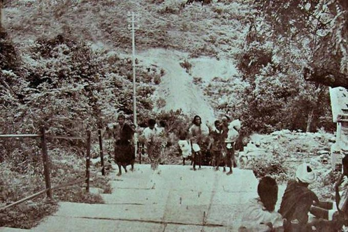
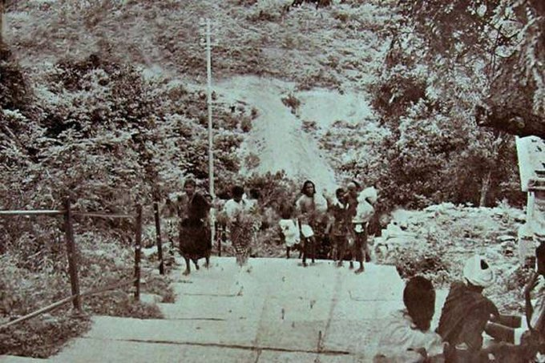

| కలియుగ వైకుంఠమ్ పేరుగాంచిన తిరుమల... నేడు నిత్యకళ్యాణం పచ్చతోరణంగా వెలుగొందుతున్నది. నిత్యం వేల సంఖ్యలో భక్తులు తిరుమల వెంకన్నను దర్శించుకుంటున్నారు. ప్రపంచంలో అధిక ఆదాయం వస్తున్న టెంపుల్స్ లో తిరుమల రెండో స్థానంలో ఉన్నది. నేడు తిరుమలకు వెళ్ళడానికి రోడ్డు,బస్సు మార్గం అన్ని అందుబాటులో ఉన్నాయి. కాని, ఒకప్పుడు తిరుమలకు వెళ్ళాలి అంటే... రోడ్డు మార్గం లేదు. అలిపిరి మెట్లద్వారా మాత్రమే వెళ్ళాలి.. లేదంటే... అడ్డదారిలో అడవిలోనుంచి వెళ్ళాలి. అప్పటికీ ఇప్పటికీ తిరుమల తిరుపతి ఎంతో మారిపోయింది అన్నది వాస్తవం. మరి ఆ పాత తిరుమల ఎలా ఉన్నదో ఇప్పుడు చూద్దాం. |
